Proposal
Summary Figure
one infographic prepared by your team that summarizes your project goal
The goal of the project is to create a model that can determine a protein sequence's antibody valence — whether it is possible to use as a vaccine — based on its chemical properties. We hope to find a clustering solution such that such sequences with antibody valence are clustered together, and a neural network which can assign a sequence a binary classification where "True" would mean that sequence could be useful as a vaccine.
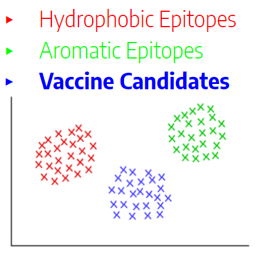 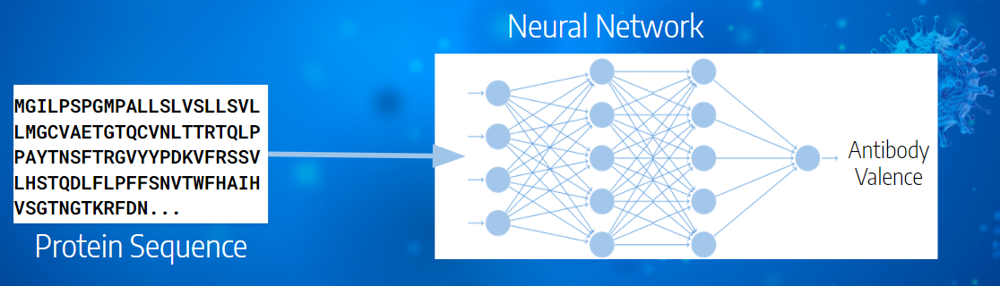Introduction
discussing the problem you aim to address, your motivation and goal
This project aims to address the problem of selecting which parts of a virus's protein shell can be used to create a vaccine. Instead of manually searching for and testing each epitope — a region of the protein sequence — individually, vaccine developers would use this model to narrow down their options to only those epitopes most likely to produce an immune response. When the epitopes trigger an immune response, they are "antibody-valent" and bind with antibodies. This prompts B-cells to fight and remember the virus, the goal of a vaccine.
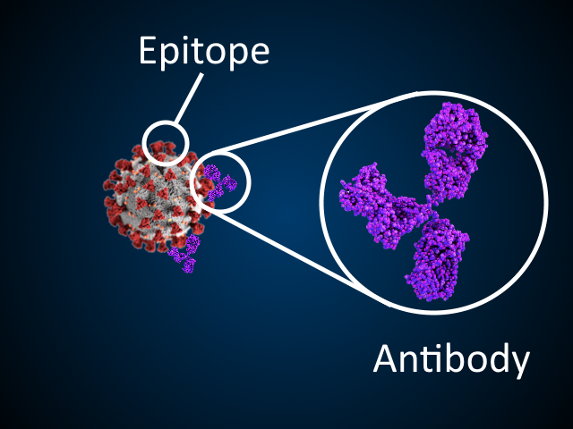Narrowing the search should speed up the process of determining which protein sequences should be synthesized and tested as a vaccine in clinical trials. The motivation is that with quicker time to clinical trials and a higher liklihood of those trials producing a functional vaccine, vaccines for new contagions can be produced more quickly, potentially saving lives.
Methods
outlining the dataset you are planning on utilizing and the techniques you intend to apply
We intend to use the COVID-19/SARS B-cell Epitope Prediction database derived from IEDB and UniProt. This database contains 14 features of 14907 epitopes divided into general B-Cells and SARS. It also contains 13 features of 20305 COVID-19 epitopes which we will label with antibody valence during the supervised phase of our project.
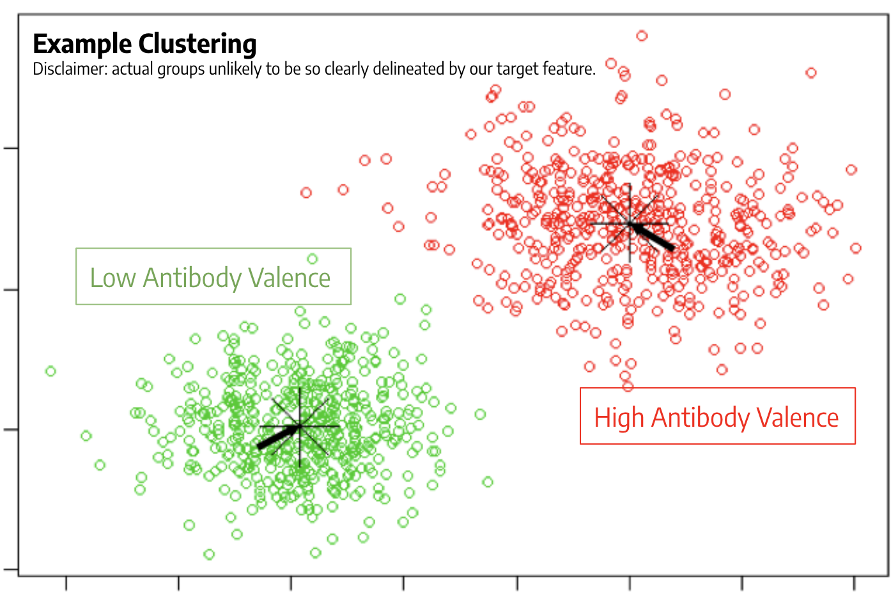For the unsupervised learning phase of our project, we intend to perform feature engineering through two approaches. First clustering our data using clustering algorithms such as KMeans, GMM, and DBScan. We will then perform clustering analysis to determine the efficacy of each approach for our dataset. This can help us find underlying similarities in our data which can help us determine which features are important for predicting vaccine candidacy. Second, we will use Principal Component Analysis to reduce the dimensionality of our data as appropriate.
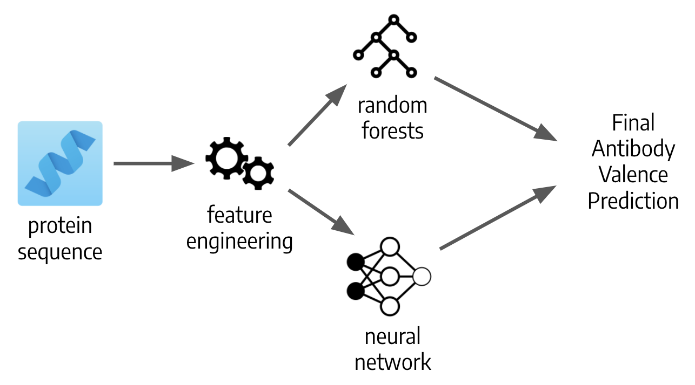For the supervised learning phase of our project, we plan to use an ensemble of a random forest along with a neural network in order to predict antibody valence (and thus vaccine efficacy) given a protein sequence and relevant features. We will split our labeled data into a training and testing set to accomplish this, however, ultimately we intend to classify the unlabeled COVID-19 Epitopes.
Results
describing the results your team is trying to achieve
Our intended result is to identify which antigens could be used in a COVID-19 vaccine, based on antibody valence. To evaluate the performance of our model, we will be splitting our data into a training and testing set. We want to emphasize our goal of having a high recall. This is vital because we must make sure that we do not have any false negatives- this would mean missing epitopes that could be used in a vaccine. Although precision is also important, having a false negative would cause much more harm than having a false positive in our case. Therefore, we want to mainly ensure that we are gathering all possible solutions.
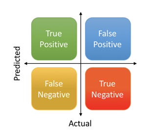Discussion
explaining what would be the best outcome, what it would mean, what is next, etc.
Our ideal output would be a model that predicts the antibody valence
of a given protein sequence and relavant traits of the protein. We aim
to narrow down the list of epitopes to test for the vaccine of
COVID-19 or similar strains of the virus by optimizing our model to
dismiss false negatives.
With a successful model, scientists and vaccine manufacturers gain a
deeper insight into immune responses to COVID-19 and similar strains
of the virus. In turn, this results in a faster development of
COVID-19 vaccine, and future vaccines of similar viruses. As vaccines
are essential for immunity against the virus, this model can in turn
eliminate the spread of the COVID-19 virus.
References
list containing at least three references, preferably peer reviewed
Jose L. Sanchez-Trincado, Marta Gomez-Perosanz, Pedro A. Reche, "Fundamentals and Methods for T- and B-Cell Epitope Prediction", Journal of Immunology Research, vol. 2017, Article ID 2680160, 14 pages, 2017. https://doi.org/10.1155/2017/2680160
Kunchur Guruprasad, B.V.Bhasker Reddy, Madhusudan W. Pandit, Correlation between stability of a protein and its dipeptide composition: a novel approach for predicting in vivo stability of a protein from its primary sequence, Protein Engineering, Design and Selection, Volume 4, Issue 2, December 1990, Pages 155–161, https://doi.org/10.1093/protein/4.2.155
Lundegaard, Claus et al. “Prediction of epitopes using neural network based methods.” Journal of immunological methods vol. 374,1-2 (2011): 26-34. https://doi.org/10.1016/j.jim.2010.10.011
Unsupervised Learning
Review
The data we'll be using comes from three seperate datasets with the same features. Each entry in the datasets is a separate epitope, which is a region of the protein shell of a virus. The features of the dataset are an assortment of chemical properties of each epitope. Which virus the epitope is from is precisely the difference between the three datasets: we have a large, labeled general dataset for "B-Cell" epitopes, which refers a collection of many miscellanious viruses. There is a smaller labeled dataset for SARS, which is a virus closely related to COVID-19, and then we have a large but unlabeled dataset for COVID-19. The labels are for "antibody valency"; a valent epitope can be used as a vaccine, while a nonvalent epitope cannot. So, the task is to use the features of each epitope in the labeled datasets to build a model which can predict the antibody valencies for COVID-19 epitopes.
Correlation Matrix Heatmap
For each of the three datasets, we plotted correlation matrix heatmaps to show the correlations between features. For the B-cell dataset, we see that the strongest correlation between features is between parker and kolaskar_tongaonkar, and that the correlation is negative. We can see that there are some features which have a stronger correlation to the target value, which is vaccine efficacy. On the other hand, in the SARS dataset, there are some feature with no correlation to the target value. These observations are important because when we are attempting to make predictions later on during the supervised learning portion of our project, we will emphasize the inclusion and exclusion of those particular features. From these visualizations, it is clear that the features more strongly correlated to the target value in the SARS dataset than in the B-cell.
B-Cell

SARS

COVID

Data Processing
Before we could get started with unsupervised learning on our data, we had to clean the data. This meant a number of steps to convert our datasets into a format which would be suitable for the unsupervised learning algorithms.
Sample of B-Cell Data Before Cleaning

First we removed the string based columns from the dataset such as protein_seq and peptide_seq. This left us with only numerical data to work with. Next we removed data that was meant solely for clerical purposes such as id, parent_protein_id, start_index, and end_index, which are useful for indexing the protein within the original dataset, but will not be useful features for learning properties of proteins which make them effective vaccine candidates. We also removed the target columns because this cleaning was for the unsupervised phase of our project.
After removing columns that were not useful and the target column, we decided to normalize the data to help avoid issues that could arise from different scaling of the features in the dataset. To do this we subtracted the minimum value of the feature and divided by the range.
Sample of B-Cell Data After Cleaning

Principal Component Analysis
One approach we took in feature engineering with our dataset was Principal Component Analysis. We applied PCA to our B-Cell, SARS, and COVID-19 datasets and plotted the recovered variance as a function of how many components we preserved.
Recovered Variance


Looking at the raw datasets it appears that PCA was able to successfully reduce the dimensionality of the datasets while maintaining variance, however upon looking at the normalized data this was not the same case. It is important to note that while it appears that SARS and COVID only require 4 principal components to capture all the variance, this is because only 4 of the features vary for the SARS and COVID data, so this is not an indicator of successful dimensionality reduction. To further explore this phenomenon of the normalized data taking more components to recover the variance, we plotted the composition of the principal components for both the normalized and raw data.
Component Feature Composition
B-Cell Principal Component Composition Raw vs Normalized


SARS Principal Component Composition Raw vs Normalized


COVID-19 Principal Component Composition Raw vs Normalized


Looking at these bar graphs it becomes clear that the raw datasets are able to recover so much of the variance because that variance is captured by only a few features, where the normalized datasets have a greater contribution from a wider spread of features.
With this insight that normalizing our datasets led to more representative principal components, and that we would need to use an equal number of components to features to capture an acceptable amount of variance in our dataset, we determined PCA would not be useful for dimensionality reduction in feature engineering for our data.
Scatterplots
As one last step to see if PCA could be of any use to us we decided to plot our datasets after reducing them to their two primary principal components. For the B-Cell and SARS datasets we also had labels for vaccine efficacy - our target value, so we colored the scatter plots based on those target values to see if there were any trends in our reduced datasets.
B-Cell Dataset Plotted on 2 Principal Axis


SARS Dataset Plotted on 2 Principal Axis


COVID-19 Dataset Plotted on 2 Principal Axis


Unfortunately, plotting the datasets on their principal axis did not reveal any obvious trends in the data.
Clustering Approach
To achieve an optimal cluster assignment for the datapoints, it is recommended to find an optimal number of clusters first. Thus, we plotted the distortion score derived from the cluster algorithms' log-likelihood score functions versus the number of clusters.
We took this opportunity to also compare clustering behaviors between the three datasets we have: COVID, B-cell, and SARS. We tested both KMeans and GMM, and in turn evaluated which of these two worked the best based on the score resulting from their corresponding functions. In addition, we tested which form of the datasets worked better overall in these clustering algorithms: raw or normalized.


From the analysis of these three graphs, we found that the 6 number of clusters to be good middle ground between too high and low using the elbow method. In each of the three datasets, KMeans behaves better than GMM, and thus we decided on the KMeans as the better clustering algorithm. For ease of manipulation, and understanding, we made a group decision of using normalized datasets at every possible point in the project. Overall, the plots demonstrated that for the unsupervised learning part of the project, we should use the KMeans algorithm on the normalized datasets using 6 clusters as the starting point.
Clustering Evaluation
One simple statistic we can look at to begin evaluating the clustering models is the number of data points in each cluster. This does not imply correctness or incorrectness, but can tell us the sizes of each group.


The clusters' sizes are fairly even between the B-Cell and COVID-19 epitopes, but half of the SARS clusters are much smaller than the others. This is interesting but does not necessarily mean anything. SARS is also the smallest dataset, so the uneven cluster sizes might be caused by that.
We have ground truth labels for the B-Cell and SARS epitopes, so we can compare the total number of valent and nonvalent epitopes in each cluster. With those totals, we can also calculate purity for the clusters: the portion of data points in that cluster which belong to that cluster's most numerous ground truth label.


For the B-Cell clusters, the purities range from about 0.65 to about 0.85. This might seem decent initially because a purity of 1 is a perfect match between clustering assignment and ground truth label. However, every cluster is matching with the same label (nonvalent) and the portion of nonvalent epitopes in the whole B-Cell dataset is about 0.75 (indicated with the red dashed line). That means that the cluster assignments are more or less a random sampling with regard to the ground truth label.


Unlike the B-Cell clusters, there are two clusters in the SARS model which match with the valent ground truth label. One of them even has a purity of 1! Unfortunately, those are also the two smallest clusters, so they aren't very useful for the majority of the data points. Among the remaining clusters, we observe the same trend as the B-Cell data: each cluster has a roughly random sample of valent and nonvalent datapoints. These observations lead us to believe that clustering is insufficent for building the desired model to classify epitopes and that we will need to utilize supervised learning to achieve better results.
Supervised Learning
Data Preparation
Preparing the data for supervised learning was relatively simple. We normalized all three datasets based on the range of the B-Cell dataset and separated the ground-truth labels for the B-Cell and SARS into "Y" lists for each of the epitopes. The actual features (chemical properties) were the "X" lists. We then randomly selected 30% of the data to be testing data while our models train on the remaining 70%.
Decision Trees
We plotted what accuracies the decision tree would have with different depths. For the B-cell dataset, a depth of about 10 is most accurate, at around 82%. Overfitting is crucial to avoid here. The accuracy wanes when you get to a depth of 15 since the model is more complex and there are more splits and specifics that fit really well for the training data but will not generalize well for the testing set.
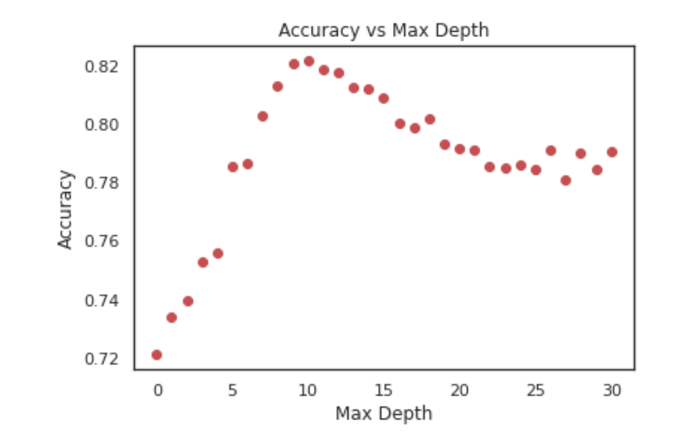The SARS graph looks a little different. A max depth of about 2 has the highest accuracy, at 72%. This lessened accuracy is largely due to not having as much data in this dataset.
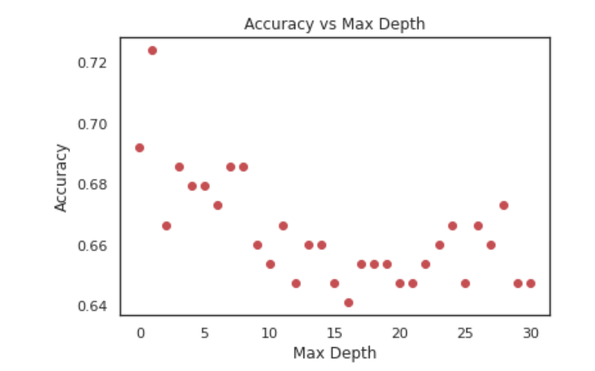For the B-cell decision tree, the most prominent features that the tree split by were hydrophobicity and stability. Out of all the outcomes, there are two that have a significant number of corresponding samples compared to the rest.
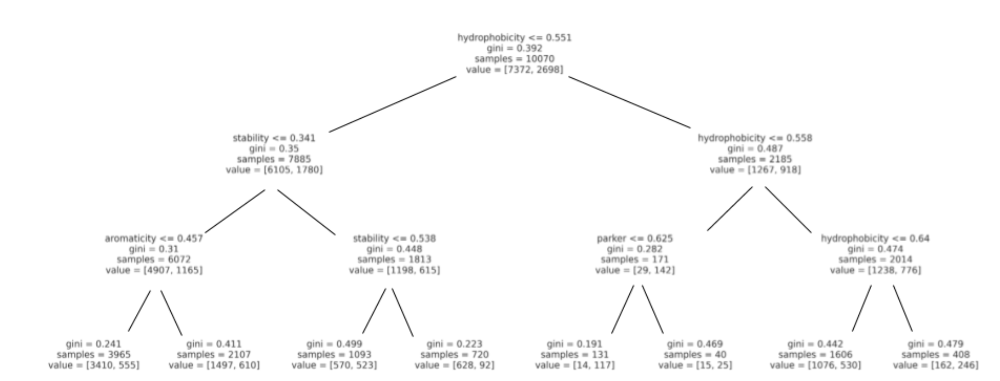For SARS, the most prominent features that the tree split by were emini and chou-fasman.
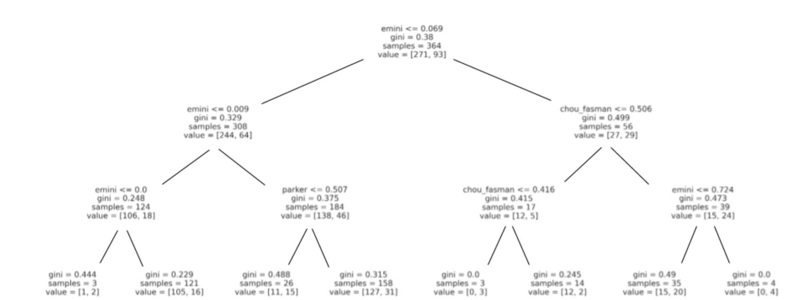It’s interesting to note the differences in the features that were more telling of a certain outcome in both datasets.
Ensemble Learning
It is known that ensemble learning methods can often work better than a single supervised model on its own. For this reason, we experimented with Random Forests, and a similar alternative called Extra Trees which is provided by scikit-learn.
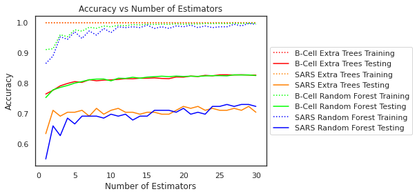This graph is designed to determine two things:
- Does Random Forest or Extra Trees perform better on our data?
- At what number of estimators does the accuracy converge?
The dotted lines are the accuracies on the training set, which is always 1 for the Extra Trees classifiers. The solid red and green lines show that both types of classifiers perform about the same on the general B-Cell data, but the orange and blue lines reveal that the Extra trees performs a bit better than random forests on SARS data. Each model seems to stop improving after at most 15 estimators, so we will be proceeding with an Extra Trees model with 15 estimators.
We wondered how the model trained on B-cell data performs on the SARS dataset and vice versa. Then we wondered, what would happen if we trained a classifier using both testing data? The answers to those questions are summarized in this graph:
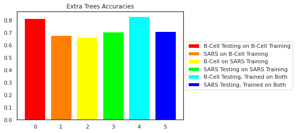The left two bars were trained only on B-Cell data while the middle two were trained only on SARS. The right two were trained on both. The even columns are the accuracy on the B-Cell data, and the odds are the accuracy on SARS. We see that training on both actually retains the accuracy achieved by training on the datasets separately since bar 4 is as tall as bar 0 and bar 5 is as tall as bar 3. For this reason, we decided to use the Extra Trees classifier trained on both datasets as our best Ensemble Learning model.
To learn more about how our classifier performed, we looked at a handful of metrics. In the combined testing set (both B-Cell and SARS), 27.97% of the epitopes were valent, but our model only predicted 23.09% to be valent. It achieved a total testing accuracy of 82.61%, which we found was reasonable based on how well several other Kaggle attempts performed. The valent precision was 72.89% and the nonvalent was 85.52%. Perhaps the most important statistic is the valent recall, which was 60.19%. That number means that about 3/5 of the potentially successful vaccine epiptopes are correctly discovered while the other 2/5 are misclassified as nonvalent. We would have liked the recall to be higher, but think that might be difficult using the features we have. The non-valent recall was 91.31%, so most of the protein sequences which would not work as a vaccine were correctly identified as such.
Multilayer Perceptrons
In training our Multilayer Perceptron model we decided to begin by optimizing hyperparameters, specifically through optimizing our model architecture. In order to accomplish this we tested the accuracy of the model with various different numbers of nodes in each layer and variable numbers of layers.
Accuracy of MLP models with different numbers of nodes in first two layers
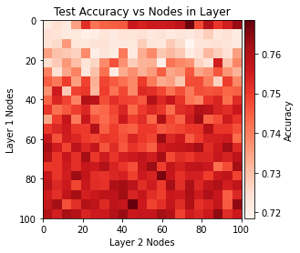 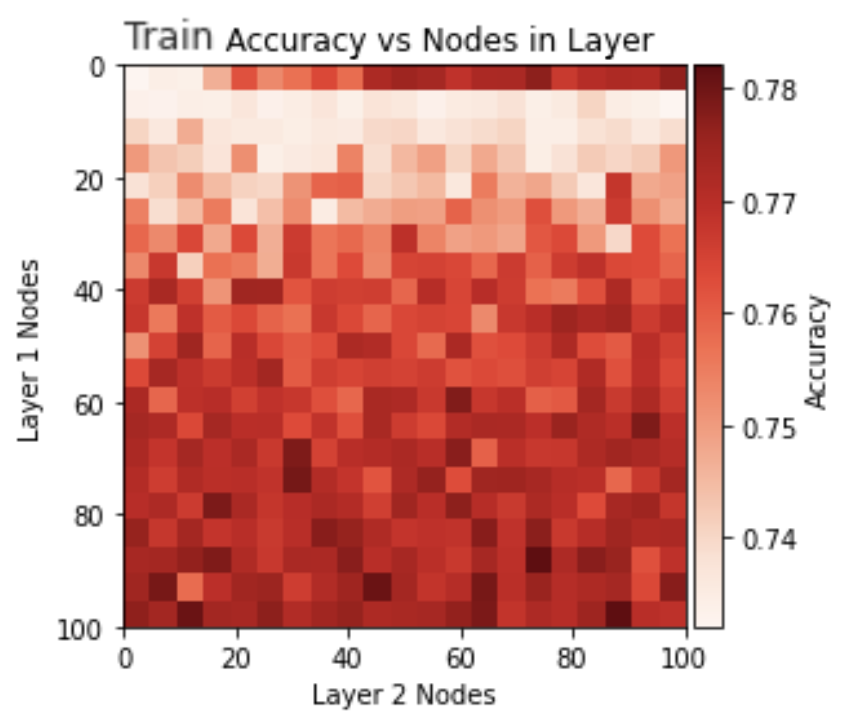The first layer seemed to have the largest influence on model performance so we decided to lock in the first layer at about 80 nodes where it was having consistently relatively high accuracy scores. Next we wanted to determine the best number of nodes for the second and third layers.
Accuracy of MLP models with hidden layers [80, X, Y]
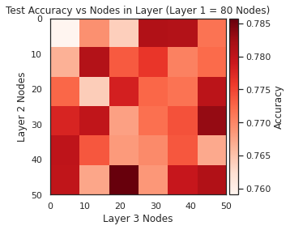 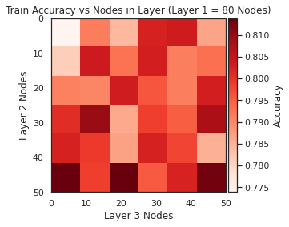After training several different model sizes the model of shape [80 x 50 x 20] seemed to have high accuracy on both the training and test sets so this was selected as our final model architecture.
Now we had to train our final models. We started by training the 80 x 50 x 20 model separately on both the B-Cell and SARS data for 10,000 iterations with a learning rate of 1e-5. This proved to be too many training iterations, because the training and testing accuracies diverged suggesting that the model was finding very specific trends in the training data that were not generalizable to the testing set.
Training the 80 x 50 x 20 models for 10000 iterations led to overfitting
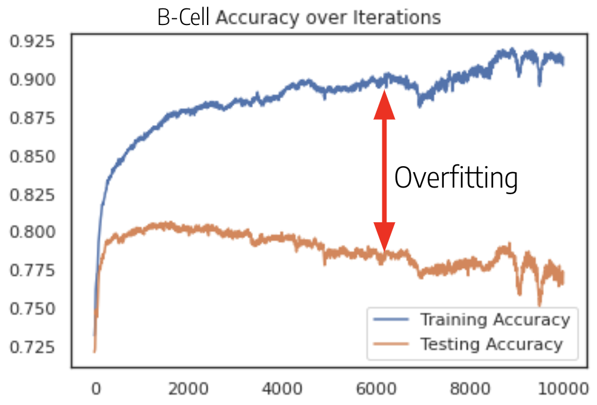 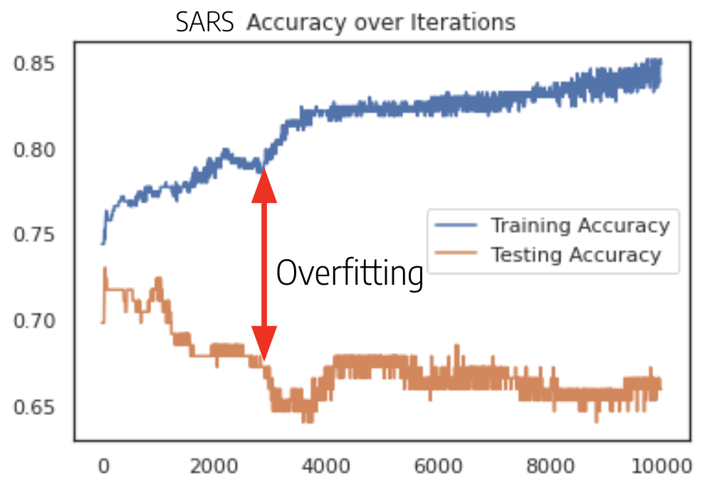To prevent this overfitting we restricted the models to fewer iterations for training. For B-Cell about 1000 iterations was sufficient and for SARS even fewer iterations (about 60) was optimal.
Training the models for fewer iterations actually yielded higher test set accuracies
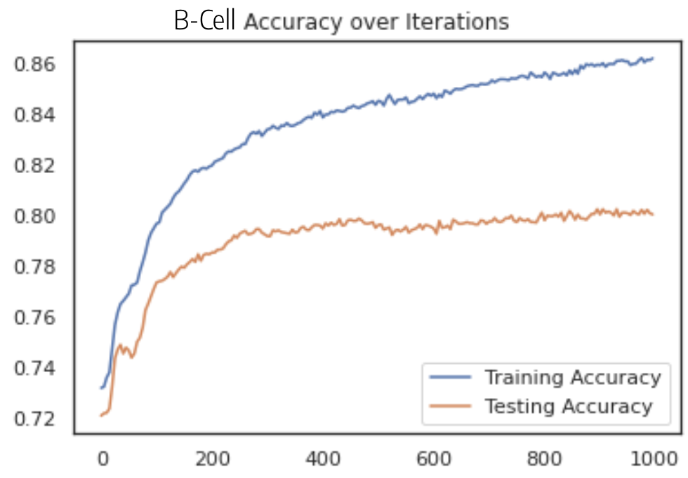 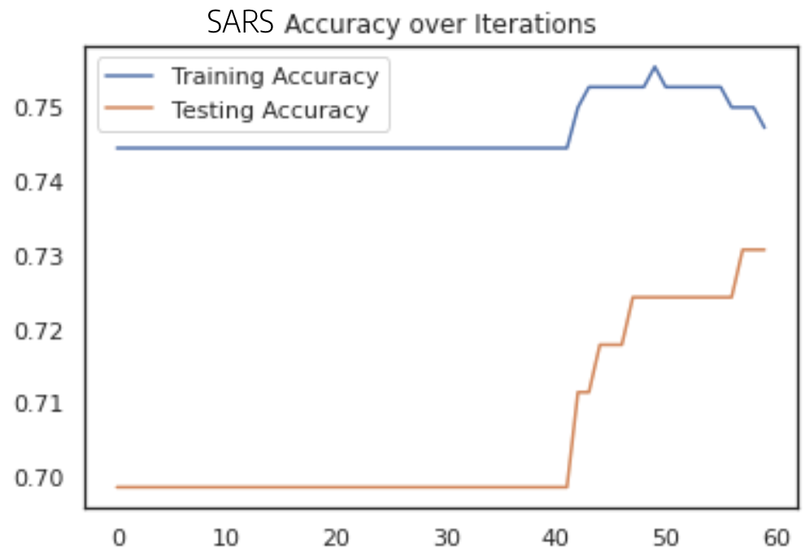The final Multilayer Perceptron models had 79.94% accuracy on the B-Cell data and 73.08% accuracy on the SARS data.
Final statistics for MLP Model on combined dataset
| Statistic | Valent | Non-Valent |
|---|---|---|
| Precision | 0.66304 | 0.83242 |
| Recall | 0.53637 | 0.89417 |
| F1 Score | 0.59302 | 0.86219 |
The MLP model performed slightly worse than the extra trees classifier. Some important statistics to highlight were the recall of 0.54 for valent epitopes meaning 54% of vaccine candidates that would actually work were correctly identified. The precision of 0.66 for valent epitopes means that 66% of vaccine candidates that we predicted would work with the MLP actually would've worked.
SVM
Since SVM classifier is sensitive to certain parameters, including kernel function, kernel function coefficient, regularization strength, and more. We first tested all applicable kernels with a sample Bcell dataset test to determine the best kernel for our type of data. With the test results, we discovered that two of three applicable kernels were equal in the resulting accuracy in the testing. After testing with SARS sample dataset, we observed a small higher accuracy with the Radial Basis Function Kernel (aka 'rbf') when compared with Linear Function Kernel. Further testing with SVM was conducted with rbf kernel.
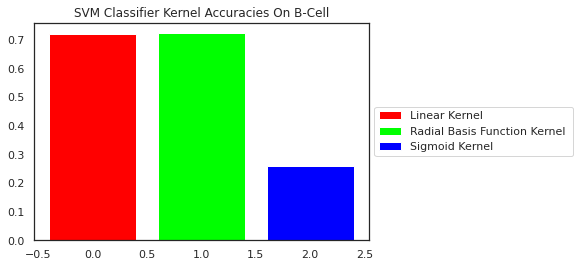With this function kernel, it is unnecessary to test for an optimal cofficient, since the rbf kernel classifies appropriately without a coefficient. However, that is not the case for the regularization strength parameter, with the used sklearn functions, the user is able to pass in a value for the magnitude of the regularization strength. By testing with the rbf kernel, we observed accuracy with various magnitudes of the regularization strength. As expected, there existed a positive/ direct relationship between the regularization strength magnitude, and accuracy with the rbf kernel. On the other hand, this relationship is negligible due to the minimal increase over the magnitude change as you can see below. We, as a group, finalized that the parameter should be set at 5 to reduce the runtime, and keep the regularization strength significant.
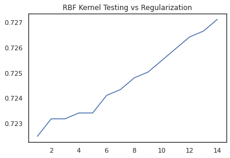
After the parameters finalized, we trained and tested the various datasets. The various testing and training took place differentiating the testing and training data to the best of our abilities without harming our dataset. For example, we concatenated the Bcell and SARS training datasets to best represent the COVID- 19 training dataset and as a summary of both datasets. We discovered that our data might not be suited for the SVM classifier, becasue no matter the changes in the classifier parameters, we always ended up with an average of 71% accuracy on our various forms of testing. This testing follows the same format used with the Ensemble Learning format testing.
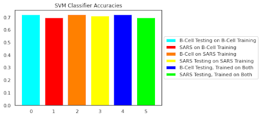
SVM couldn't spatially define and separate the valent and non valent features of the dataset due to the kernel function. In turn, SVM has predicted that all epitopes/ datapoints are non-valent, where other models countered with thousands of valent epitopes. In addition, our datasets were not able to clustered in small number of clusters, which reveals that there doesn't exist an easy definitive way to classify valent features, which was further proven with this SVM classifier method.
Final statistics for SVM Model on combined dataset
| Statistic | Value Valent | Value Non-Valent |
|---|---|---|
| Precision | 0.66666 | 0.72241 |
| Recall | 0.01279 | 0.99752 |
| F1 Score | 0.02510 | 0.83796 |
Supervised Model Comparision
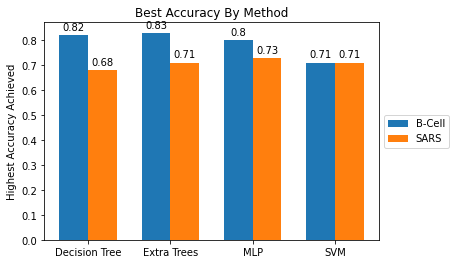Plotting the accuracies of each method side-by-side, we can observe that each model performed roughly the same on the data. We wanted to pick one to use as our final predictor for COVID-19 though, so we had to decide on the "best" classifier. To do this we looked at the precision and recall.
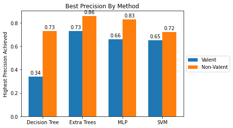 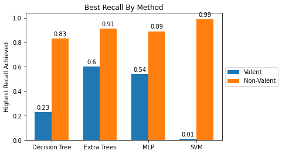The Extra Trees classifier had the best performance in precision and recall across all classes besides Non-valent Recall. This is because the SVM model classified nearly every epitope as non-valent so as a result it didn't miss any non-valent epitopes. Although this yielded a high Non-valent recall for the SVM this did not effectively accomplish our goal of identifying valent epitopes. The more important class was the performance for valent epitopes. For the valent epitopes the extra trees model had the strongest performance for all measures. As such we selected Extra Trees as our final model.
COVID-19 Predictions
We used our Extra Trees classifier to make predictions on the unlabeled COVID-19 epitopes and noticed an interesting characteristic. The Extra Trees classifier underpredicted the number of valent epitopes by about 5 percentage points, since there were actually ~28% valent and our model only predicted ~23%. However, it predicted 33.68% of the COVID-19 epitopes as valent. We can only speculate as to why this difference occurs; perhaps COVID-19 actually does have a higher ratio of valent epitopes, or maybe our model doesn't have enough information to rule out some of the false positives. We hope the first explanation is correct.
Out of the 20312 unlabeled COVID-19 protein sequences, we predicted 6841 to be candidates for use in a vaccine. A sample of those proteins are listed below:
['MGILP', 'GILPS', 'ILPSP', 'LPSPG', 'PSPGM', 'SPGMP', 'PALLS', 'LLSLV', 'LSLVS', 'SLVSL', ...]